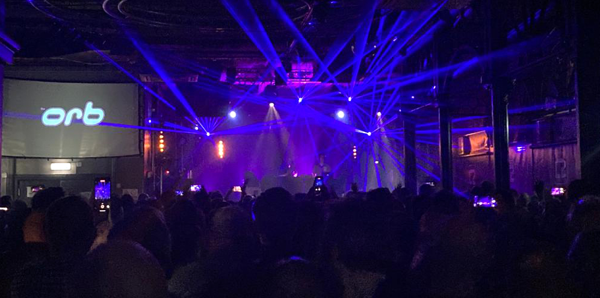

Posted on 2022-10-29 · 3 min read · The Orb · Music · Live Music · Ambient · Electronic · Twenty Two
Went with my friend Nick to see The Orb at Concord 2 last night. The last time I’d seen the Orb was back in 2004, at the start of their relatively dry spell. That night, they’d been a bit lacklustre despite playing (some of) the hits and a relatively decent album in “Bicycles and Tricycles”. I left feeling that I’d seen the past rather than the future, something that I wouldn’t glimpse again in their records until 2015.
This tour celebrates the 30th anniversary of the U.F.Orb album. Regular readers will know that particular album is much beloved on these pages (you could read its entry in my understated classics if you like) and so I couldn’t really pass that chance up. Also, I’d never been to one of those ‘play the album in full’ gigs before. Unless you include bands on their first album that is.
Once they got going, the gig was very enjoyable. I always love the sound at Concord 2: anything with heavy bass just mashes into you. Suffice to say there is a lot of heavy bass material on U.F.Orb and the sound system lived up to the occasion.
Apart from the rather odd intro, the setlist was just the album without Sticky End and then Little Fluffy Clouds at the end for good measure. This meant the gig was short and sweet. No Assassin (which I would have liked to hear), no having to remember which of the new tracks this is, etc and so on. Instead we got an epic long Blue Room, a version of Towers of Dub that pushed its cycling riff towards something like drum’n’bass before collapsing in on itself to the original, and probably the best version of Majestic that I’ve heard, one that made much more of the Bhanghra samples.
As for the spectacle, it was two guys at mixers on the stage. There was a wave at one point and some lasers. Even the voice samples that pepper the album didn’t make much of an appearance. Violeta Vicci started the gig on violin but apart from that, the music was the star of the show.
I did enjoy people-watching the crowd though. I was 12 at the time U.F.Orb was released, making me pretty young for the average fan. I certainly wasn’t really ’there at the time’. So the majority of the audience last night was between 5 and 20 years older than me. The whole age gamut was even wider: there were people coming out with walking sticks and someone else had brought their kids along. Everyone I made eye contact with had a big grin plastered across their face. Slightly more berets, beanies, and dungarees than the average crowd too.
I’ll admit to seeking refuge at the back quite a bit (still loud enough!). For me, U.F.Orb has always been space music, safe space music, something to retreat into. It was delightful to see so many other people enjoying it, but at the same I was just like Voyager 2 beaming back over thirty light years the words that I’d doodled into my pencil case at school almost three decades ago:
On our way home on our way home on our way home on our way home on our way home on our way home on our way home on our way home on our way home on our way home on our way home on our way home on our way home on our way home on our way home on our way home on our way home on our way home on our way home on our way home on our way home on our way home on our way home…
